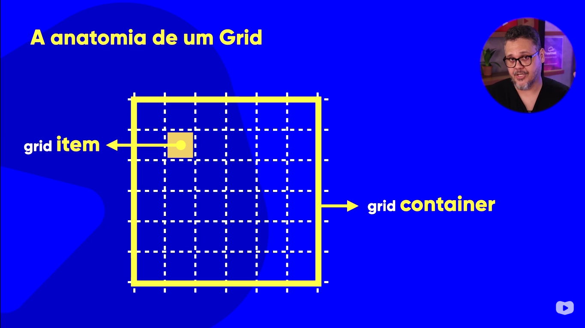

O CSS Grid Layout é um sistema bidimensional que permite criar layouts mais flexíveis e organizados. Ele possibilita trabalhar tanto com linhas quanto com colunas, facilitando a distribuição dos elementos na página. Para entender como o grid funciona, é importante conhecer sua anatomia: os elementos que compõem sua estrutura.
O Grid Container é o elemento que envolve toda a grade. Ao aplicar a propriedade display: grid;,
ele se torna o contêiner responsável por definir o contexto em que os itens do grid serão organizados.
Os Grid Items são os elementos filhos diretos do container. Eles são posicionados dentro da grade, podendo ocupar uma ou mais células conforme a configuração definida.
Um Grid Track é o espaço entre duas linhas adjacentes da grade. Pode ser tanto uma linha horizontal (row track) quanto vertical (column track). É basicamente a "faixa" onde os elementos ficam posicionados.
As Grid Rows são as linhas horizontais da grade. Elas organizam os elementos de cima para baixo, ajudando a estruturar o layout verticalmente.
As Grid Columns são as colunas verticais da grade. Elas organizam os elementos da esquerda para a direita, ajudando a estruturar o layout horizontalmente.
As Grid Lines são as linhas que dividem a grade em linhas e colunas. São usadas para posicionar
os elementos com precisão dentro do grid, através de propriedades como grid-row-start ou grid-column-end.